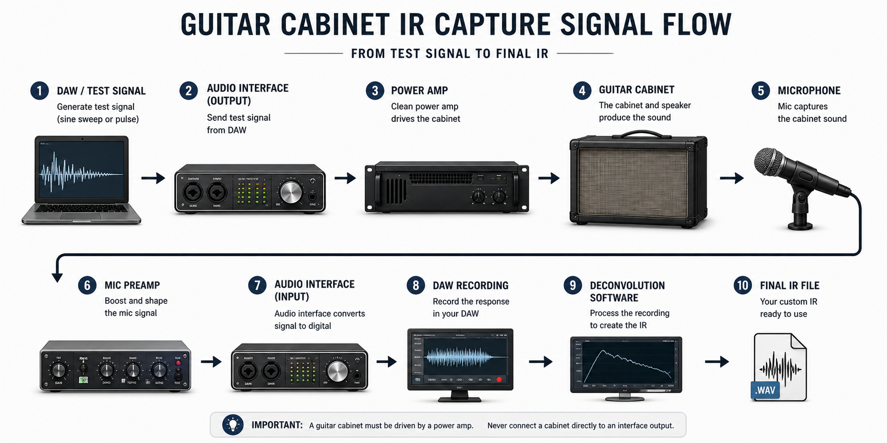
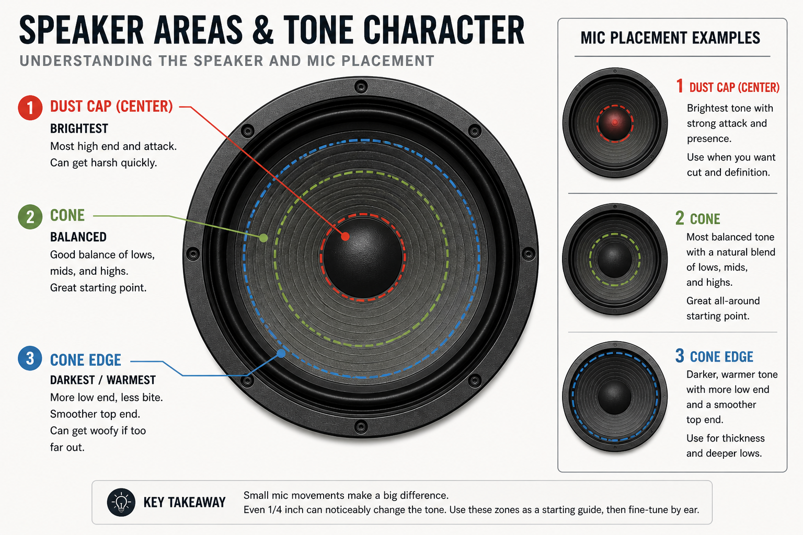

Guitar Cabinet IR Capturing
Practical Notes From Real-World Experience
Introduction
I started out my impulse response (IR) capturing journey wanting to find cabinet IRs that matched up well with my actual amp cabinets. I was doing ToneX captures of my amps and wanted IRs that actually sounded like my cabs. I bought thousands of individual IRs from all the big players, but these still weren’t my particular speakers and cabinets, so I eventually decided I should try to make my own.
It’s surprisingly hard to find good, reliable information on how to create high-quality, professional-level guitar cabinet impulse responses. There’s no shortage of articles and YouTube videos, but a lot of the advice I came across was leading to sub-optimal results that didn’t sound quite as good as some of the commercial IRs I was buying.
After a lot of trial and error, I think I’ve finally landed on results that are comparable to commercial IRs. Rather than gatekeep this information, I wanted to create this Guitar Cabinet IR Capturing Guide to document what works. I’m not presenting this as the “correct” way to do things, just a repeatable approach that consistently produces high-quality results on par with commercial offerings.
What Is a Guitar Cabinet IR?
At a basic level, a guitar cabinet impulse response (IR) is a snapshot of how a speaker, microphone, and signal chain shape the sound of an amp.
When you play through a real guitar cabinet, you’re not just hearing the amp. You’re hearing the speaker, the cabinet, the microphone, and the mic preamp. All of those elements have a huge impact on the final tone.
An IR captures that filtering and lets you apply it later in a digital environment. Instead of running your amp through a real cabinet and mic every time, you can run a signal through an IR and get a very similar result.
But an impulse response is essentially a static snapshot of the system at a specific moment and level. It does a great job capturing the overall filtering of the cabinet, microphone, and signal chain, but it can’t fully capture how a speaker behaves dynamically. IRs are extremely useful, but I just don’t think of them as a perfect representation of a real cabinet.
Signal Flow and Power Amps

You’ll need a few pieces of gear to capture impulse responses of your guitar cabinets: a DAW, audio interface, power amp, guitar cabinet, microphone, mic preamp, and deconvolution software.
Important: before going any further, a quick warning: you can absolutely damage your amp, power amp, or speakers if you don’t know what you’re doing. Make sure you understand what each connection is doing, what safe signal levels look like, and how to properly hook everything up before attempting this.
At a high level, the process is simple. You generate a test signal in your DAW, send it out through your interface, then into a power amp that is driving your guitar cabinet. From there, you mic the cabinet, run that into a mic preamp, back into your interface, record the result in your DAW, and then use that recording to create an impulse response.
The key point here is that guitar speakers must be driven by a power amp. You cannot connect a speaker cabinet directly to your interface output and expect it to behave correctly. At best, it won’t work. At worst, you can damage something.
In my case, I use a Fryette Power Station PS-2A to drive my cabinets. It’s tube-based, but very clean in this application. A solid-state power amp would also be a great option, and in some cases may even be preferable for consistency.
While a dedicated power amp is ideal, you can also use the effects return of an amp if you’re careful. The main thing to watch out for is level. Don’t just slam a line-level signal straight into an FX return. You can overload that stage and introduce filtering or distortion that isn’t representative of the cabinet itself.
Test Signal: Pulse vs Sweep
A lot of guides recommend using a Dirac pulse. In simple terms, this is an extremely short, full-level spike in a digital signal, essentially a single-sample “click” that excites the system all at once.
In my experience, this approach didn’t give great results. It was inconsistent and very sensitive to noise. If I fired off a few pulses in a row and created an IR from each one, they were all slightly different. That’s not what you want. If your capture method produces different results every time, something is wrong.
What worked much better was using a 30-second sine sweep. This is a tone that slowly sweeps across the frequency range over time, which is then deconvolved back into an impulse response.
I generate and process these sweeps using Voxengo Deconvolver. The results are far more consistent, the signal-to-noise ratio is significantly better, and the low end feels much more natural and accurate.
In practice, this was the first real breakthrough for me. Switching from pulses to a longer sine sweep immediately led to results that felt much closer to the commercial IRs I had been using.
You don’t have to use Voxengo specifically, there are other tools that can do the same thing. The key takeaway is simple: for guitar cabinet IR capture, a longer sine sweep will generally give you more reliable and more professional results than a short pulse.
Speaker Level (Critical)
Once everything is connected, the level you capture the speaker at is wildly important.
If the level is too low, the speaker isn’t really working. The bass response will feel weak, the top end will come across as overly bright, and the overall tone will feel stiff and unnatural. If the level is too high, the speaker starts to compress. The low end becomes mushy, detail gets smeared, and the top end can turn harsh.
What you’re looking for is the point where the speaker is operating naturally, not idling, but not being pushed hard either.
You can use a 1 kHz sine tone and an SPL meter as a rough reference point, since that’s how speaker sensitivity is typically measured. That can get you in the ballpark, but it only goes so far, especially with multi-speaker cabinets.
In practice, the most reliable approach is to run a guitar signal through your reamp chain. Start with the power amp at a low level, and slowly bring it up. Listen for the point where the low end fills in, the top end smooths out, and the speaker starts to feel like it’s doing what it’s supposed to do. That’s the range you want to work in.
Once you find that range, you can fine-tune within it, but don’t push much beyond it. When you do, things tend to fall apart pretty quickly.
Speakers
At this point, it’s worth taking a step back and recognizing that guitar speakers are mechanical devices. They are not perfectly linear. Their response changes depending on how hard they’re being driven, which is exactly why speaker level matters so much. They also have other non-linearities.
Understanding the Speaker

Before getting into mic placement, it helps to understand guitar amp speakers and think about them in simple zones.
The dust cap at the center is the brightest area, but can get harsh quickly. The cone just outside the dust cap is usually more balanced, and is generally a good starting point. As you move toward the edge of the cone, the sound gets darker and bassier, and can eventually become a little unfocused or “woofy” if you go too far.
On top of that, speakers aren’t perfectly uniform. Some areas are brighter, others are darker. When you’re standing in a room, you’re hearing the entire speaker as a whole, so those differences blend together. But once you put a microphone an inch or two off the grill, those differences become very obvious.
For example, on every Celestion speaker I own, there’s a clear “bright side” and a “dark side.” Which side is which isn’t something you can reliably predict ahead of time, you only really find it once you start moving a mic around. You don’t listen to a guitar amp with your ear an inch from the speaker, but that’s effectively what the microphone is doing.
The goal is to find the sweet spot on that specific speaker. That’s going to come from moving the mic around, listening to the results, and adjusting until it sounds right.
Microphone Placement
Microphone placement is where things really start to come together, and also where small changes make a big difference. There isn’t one “correct” way to mic a guitar cabinet, and good mic technique is a skill in itself.
Mic choice also plays a huge role in how you approach placement. Brighter dynamics like an SM57 can get harsh very quickly if you point them straight at the dust cap. Ribbons like an M160 are smoother but still fairly bright on-axis. On the other hand, darker mics like the Roswell Audio Cab Mic are designed to be used right on the dust cap and further back. So while there are good general starting points, mic placement always has to be considered in the context of the mic you’re using.
Microphone preamps are a whole other rabbit hole, but at a minimum, use the best preamps you have and get things sounding as good as possible at the source.
That said, there are some starting points and general guidelines that will get you in the right direction.
Starting Position (Horizontal)
For most dynamic microphones and brighter ribbon mics, I recommend starting with the microphone positioned at the center of the cone, rather than pointing directly at the dust cap.
From there, I listen and make small adjustments. If I want more brightness, I’ll move the microphone slightly toward the dust cap. If it’s too bright, I’ll move it back toward the edge. I’ll also try the opposite side of the cone, since one side of the speaker is often brighter than the other.
The key here is that movements should be small. Even a quarter of an inch can make a noticeable difference. If you’re moving the mic in larger increments, it’s very easy to skip right past the sweet spot.
Vertical Position
Vertical position matters just as much as left-to-right placement, and it also ties directly into how the cabinet interacts with the floor.
I usually start with the microphone vertically centered on the speaker, but that’s not a strict rule. Moving higher or lower can reveal different tonal areas of the speaker, just like moving left and right.
At the same time, you also have to consider floor boundary effects. If the cabinet is sitting directly on the floor, you’ll get some low-end reinforcement from that boundary. That can make the capture sound bigger, but sometimes a little loose or exaggerated in the lows. Positioning the microphone too low can exaggerate this further, and in some cases introduce comb filtering, as reflections from the floor reach the mic at the same time as the direct sound from the speaker.
If you elevate the cabinet, for example on a chair or an amp stand, that low-end reinforcement is reduced and the response tends to tighten up. Neither approach is “right,” but it will change what the microphone hears. I generally don’t elevate the amps, but I have in some instances to good effect.
There are also practical constraints. Some cabinets have internal bracing or supports behind the grill cloth. In my Supro cabinet, for example, if the mic lines up directly with that bracing, it can block or reflect sound in a way that creates a strange, beamy or comb-filtered result. In that case, I had to adjust both vertically and horizontally to avoid it.
Distance and Proximity
Distance matters as well, especially for the low end.
With dynamic microphones, I tend to start with the microphone capsule (not the grill, but the actual diaphragm inside the mic) about two and a half inches from the amp’s grill cloth. From there, I’ll move closer in small increments, usually a quarter to a half inch at a time.
With condenser microphones, I’ll generally start further back. For example, the Roswell Audio Cab Mic is designed specifically for guitar cabinets. It’s a darker microphone that’s meant to be used around six inches back, pointed at the dust cap, with the option to move closer if you want more low end.
For most directional microphones, as you move closer to the speaker, the low end increases due to proximity effect. As you pull back, the low end tightens up. So when you move the microphone closer or further out, you’re changing the overall character of the tone.
Closing Thoughts
Over time, you start to learn your microphones, cabinets, and speakers and what tends to work. Some microphones sound better closer, some further back. Some speakers sound best on one side of the cone, others on the opposite side.
Ultimately, you’re not trying to follow a diagram, you’re trying to find what sounds right on that specific speaker with that specific mic, and small movements matter more than you think.
How I Set Up My DAW
I use a combination of REAPER and Voxengo Deconvolver to create my IRs. You can do this with other DAWs and tools, but I think the project setup and file management side of things are worth talking about, because that’s where a lot of people lose track of what they’re doing.
The basic signal flow was covered earlier. On the software side, my process starts in Voxengo Deconvolver, where I generate a 30-second sine sweep test tone. I then import that sweep into REAPER.
Inside REAPER, I have a dedicated “Test Tone” track that routes directly to a hardware output on my interface. I place the sine sweep on the timeline multiple times, with a few empty measures in between each one. Each sweep represents a capture point.
I use markers to label and number each capture, and I’ll often use REAPER’s marker lanes to add notes about what I’m doing, things like mic position, distance, preamp, speaker, and anything else that might matter later. This becomes extremely useful once you start building larger sets and need to keep track of what’s what.
For recording, I create one track per microphone and speaker combination. I name them clearly, for example: Track 1: G12H SM57, Track 2: G12H M160. That way, everything stays organized as I go.
When it’s time to export, REAPER makes this easy. I use its render options to automatically name files based on a prefix (example: FB 212 Top Hat), combined with the track name and marker number. That gives me consistently labeled files without having to rename anything manually. Example: FB 212 Top Hat G12H SM57 1, FB 212 Top Hat G12H SM57 2, etc.
Once the files are exported, I bring them back into Voxengo Deconvolver to generate the actual IRs. From there, I’ll audition them, pick favorites, sort them, and do any additional work like creating blends.
Consistency and Workflow
Consistency matters more than anything if you’re trying to build a useful set of IRs. If you’re changing mic position, level, or cabinet placement between captures without tracking it carefully, you’re not really comparing anything.
Keep things stable unless you’re intentionally making a change, and evaluate as you go. Capture a few positions, listen to them right away, and adjust. That feedback loop is what actually gets you to a good result.
I record everything at 24-bit / 96 kHz. After I’ve finished sorting and organizing, I use Voxengo r8brain to resample the IRs down to other sample rates as needed.
What Makes a Good IR
When it comes to evaluating IRs, what I’m really listening for is balance. This is subjective, and I’m sure some people would prefer something different, but I’m not trying to recreate the exaggerated lows and highs you get from standing in front of a loud amp in a room.
That kind of sound can be exciting on its own, but it doesn’t usually translate well.
Balance Over Hype
I’m looking for something that has a controlled low end, clear mids, and a top end that isn’t harsh. Something you can drop into a mix with a variety of amps and guitars and not have to fight.
The low end is where a lot of IRs go wrong. Too much bass can sound great when you’re playing by yourself, but in a mix it just turns into mud. It fights the bass guitar and the kick drum, and you end up cutting it anyway. I’d rather start with something tighter that sits well from the beginning.
If it only sounds good solo, it’s probably not a good IR.
Pairing Amps and IRs
When you’re auditioning IRs to use with your amp, start with the big decision first, which is the cabinet and speaker pairing. Think about what actually makes sense for the amp you’re using.
If the first IR in a set sounds completely off, too thin, too dark, too harsh, it’s probably not the right match. Move on. A 2x12 cabinet with a Fender Princeton Reverb might sound interesting, and even good, but it probably wouldn’t be my starting point. I usually start out looking for like-for-like pairings, at least on combo amps.
Once you find a pairing that sounds pretty good with your amp, then it’s worth digging into different microphones, positions, or mixes within that set. You shouldn’t need extreme EQ to make something usable. EQ should be for fine-tuning something that’s already working.
Final Thoughts
If you’re interested in IR creation, I hope you found this information useful. This is the kind of stuff I was hoping to find but unfortunately could not when I was starting out. I feel like the IRs I’m making today are finally at the point where I’m really happy with them. And I’m happy to share them with others, along with some of the knowledge and experience that goes into creating them.